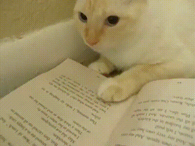

¡¿Por qué NECESITAS un gato en tu vida?!
Mira, si estás pensando en conseguir un gato, déjame decirte que eso va a
mejorar tu vida de formas que ni imaginas. Aquí van 10 razones, y no lo
digo porque estoy medio desesperado y necesito convencerte… bueno, ¡quizá
sí!

Razones:
-
Son más limpios que tú (sin ofender): Pasan horas acicalándose. En
serio, tu gato va a estar más limpio que tú la mayor parte del tiempo,
pero sin alardear... solo un poco.
-
Cero esfuerzo, todo amor: No tienes que sacarlos a pasear, ni darles
baños constantes. Les basta con un sillón, una ventana y tu dignidad
destruida.
-
Independientes (como que no te necesitan, pero sí): Los gatos son como
esos amigos que dices "bueno, ellos sabrán cuándo aparezco." Pero,
sorpresa, aparecen a las 3 AM… en tu cara.

Razones para no tener un gato:
- Soy alergico a los gatos
- Ninguna jajaja
- Nada u.u
- Lol
By: Jonh.